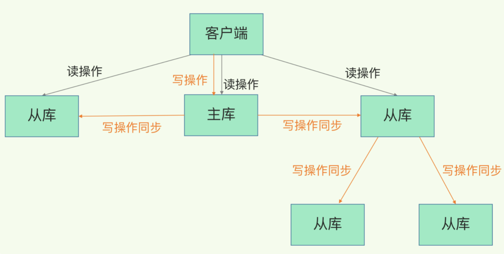
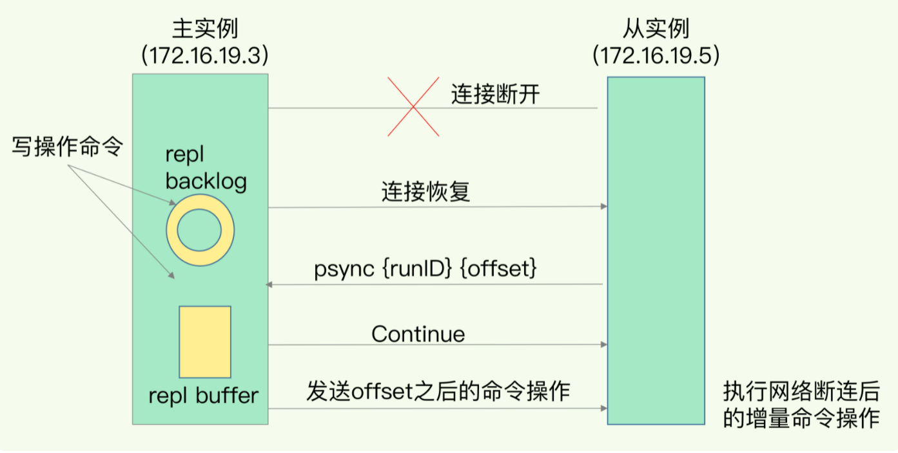

Redis核心原理与实战(2) 高可用
1. 复制
1.1 介绍
对于单机的 Redis，有 RDB 和 AOF 持久化机制，在宕机过后可以恢复数据，但在恢复过程中仍然存在不可用的问题。对于这个问题，Redis 提供了主从库模式，主从库采用读写分离的方式，写操作都作用在主库，并同步给从库。
可以通过 relicaof 指令形成主从库，例如现有实例 1（ip: 172.16.19.3）和实例 2，在实例 2 上执行以下命令，实例 2 就变成了实例 1 从库。
1 | replicafof 172.16.19.3 6379 |
Redis 的复制功能分为同步和命令传播两个操作：
- 同步：将从库的状态更新到主库的状态
- 命令传播：主库数据修改，将数据同步给从库
其中命令传播较为简单，下面主要介绍同步。
1.2 同步
主库和从库的同步需要经历三个阶段：
- 从库发送 psync 命令，表示要进行数据同步，该命令包含主库的标识 runID 和复制进度 offset，主库对此响应 FULLRESYNC 命令并携带两个参数
- 主库执行 bgsave 命令，生成 RDB 文件发送给从库，从库接收文件后清空数据库并进行加载
- 主库将第二阶段新收到的写命令发送给从库，从库执行后完成同步

上述过程对于主库而言，生成和传输 RDB 文件较为耗时，如果从库数量很多，将会导致主库忙于 fork 进程生成 RDB 文件，而 fork 操作会阻塞主线程处理正常请求，导致响应变慢。为了分担主库的压力，可以采用 主 - 从- 从 模式。
主 - 从 - 从 模式在部署从库时，可以手动选择一个从库，其他部分 Redis 实例作为这个从库的从库。这些 Redis 实例在进行同步时，只需要从级联的从库同步写操作即可。

1.3 增量复制
主从库如果出现了网络中断，重连之后进行全量复制的开销非常大，对此 Redis 2.8 引入增量复制。
增量复制的奥妙在于 repl_backlog_buffer 缓冲区，这是一个环形缓冲区，主库记录自己写到的位置，从库记录已读的位置。
在主从库断连后，主库会把这期间收到的写操作，同时写入 replication buffer 和 repl_backlog_buffer。在从库恢复链接后，发送 psync 命令和自己的已读偏移给主库，主库响应从库缺失的指令，从库运行之后即可完成同步。

2. Sentinel
在主从库模式中，如果主库宕机，写请求将无法处理，此时需要将一个从库切换为主库，这就要提到哨兵机制，这是实现主从库自动切换的关键机制。
哨兵 Sentinel 是 Redis 的高可用方案，本质是一个运行在特殊模式下的 Redis 实例，主要负责三个任务：监控、选主和通知。
2.1 监控
监控即判断主库是否为下线状态，Sentinel 会按一定频率向所有跟它连接的实例发送 PING 命令，判断实例是否在线。
哨兵对主库的判断有 主观下线 和 客观下线 两种，当哨兵发现实例对 PING 的响应超时了，就会把它标记为主观下线。此时并不会开启主从切换，因为可能主库并没有故障，但由于网络拥塞导致超时，导致误判。
在日常开发中，会采用多实例组成的哨兵集群，当超过半数的哨兵判断为主观下线时，才会将主库判定为客观下线，进行主从库切换。
2.2 选主
哨兵集群首先使用 Raft 算法选出领头 Sentinel，再选择新主库。哨兵选择新主库的过程分为 筛选 + 打分，首先会根据一定条件去掉不符合条件的从库，再根据一定规则给从库打分，选择得分最高的从库作为主库。
筛选条件：从库首先得是正常在线状态，最近 5 秒内有回复过领头 Sentinel，并且与主库的断连次数少于一定阈值。
打分规则分为三轮，只要在某一轮中有从库得分最高，则会被选为主库。
- 从库优先级：用户可以通过 slave-priority 给从库设置优先级
- 从库复制进度：选择和旧主库同步最接近的从库，即增量复制下标最解决主库的从库
- ID ：选择从 ID 最小的从库
2.3 通知
在选出新主库后，Sentinel 发送 SLAVEOF 命令通知从库去复制新主库，并将旧主库变为从库。
3. 切片
当 Redis 中存放大量键值对时，将会占据大量内存，并且影响 RDB 持久化的性能，对此引入切片集群。
切片集群，也称分片集群，指启动多个 Redis 实例组成集群，并按照一定规则，将数据划分多份，交由不同实例保存。
3.1 数据和实例的映射
在切片集群中，数据需要分布在不同实例上，那么数据和实例之间如何对应呢？
Redis 3.0 引入 Redis Cluster 提供针对切片集群的方案，采用哈希槽 Hash Slot 来处理数据和实例的映射。一个切片集群共有 16384 个槽，根据 key 计算 16 bit 的值并对 16384 取模，可以得到 key 对应的槽，那么槽如何与实例对应呢？
默认情况下 Redis 会把这些槽平均分配各个实例，用户也可以自定义槽与实例的映射。
3.2 客户端定位数据
在集群创建过程中，每个实例会把自己的哈希槽发给预期连接的实例，最终得到所有哈希槽的分布，客户端与集群实例建立连接后，便能得到所有分布信息缓存在本地。
当实例和哈希槽的对应关系改变之后，例如新增/删除实例，此时客户端是无法获知这个槽变化的，Redis Cluster 提供了一种重定向机制，给客户端发送新实例的地址。
1 | 槽变为12321，IP地址为192.168.1.1 |
但可能192.168.1.1 的数据迁移仍未结束，此时会回传 ASK 报错信息。
1 | (error) ASK 12321 192.168.1.1 |